固件逆向的通用技巧
前言
这个是多年前自己为了方便查阅的写的笔记，记录的是碎片话思路，很乱，没有操作步骤，持续更新。
这里指的固件是从存储芯片提取的原始文件或升级文件。
原始固件逆向的特点
- 固件文件难以获取
- 网上很少案例，全靠自己经验摸索
- 不能直接运行，调试困难
- 大部份符号无法还原，汇编代码范围要手动指定
- 几乎没有代码混淆
固件的分类
根据系统架构分类，主要分为SoC固件和MCU固件。SoC固件一般由处理器单元和外围单元等组成，由处理器内置的BootROM引导至外部的Flash，这个外部的Flash的数据就称作固件。一个SoC类型的设备，通常使用SPI NOR Flash、NAND Flash、EMMC。SPI Flash一般存放Bootloader，NAND Flash存放系统内核，固件等。对于后者，一般需要提取文件系统；对于前者，需要研究启动过程。一般SPI Flash的固件会由多个部分组成，不能直接把固件的Dump丢入IDA Pro。而MCU固件不会分成很多个区域，一般来说就是一个到两个。对于只使用内置存储的MCU，只要Loader+Application；对于使用了外置存储的MCU，内置Loader+Application，外部的Flash就不会再分成多个部分了。
提取固件
对于NAND Flash或者其他冷门存储，需要在提取固件环节耗费很多精力，另外某些冷门MCU的固件也很难提取。
寻找加载基址的总结
一般逆向固件，首先要做的是找到加载基址，因为当基址还原，字符串，jpt等交叉引用ida都会自动修复。
（这里很乱，以前自己写的，看不懂就忽略吧）
加载基址有多种方法获取：
- 芯片数据手册，根据芯片手册的内存布局和启动模式信息，找到内存基址
- 寻找该芯片公开的代码，比如Bootloader，再找到加载基址。
- 逆向上一级Loader，找到加载下一级的基址。例如U-Boot会携带基址信息
- 外部中断向量表（IVT），一般是绝对地址，再稍微猜测一下
- 如果没有中断向量，就找可见字符串引用绝对地址
- 找到所有字符串，再找所有存在引用的地方，逐个匹配，存在交叉引用最多的就是正确基址。
- 如果有调试权限，打印内存，寻找固件头部对应的地址
- 首先考虑地址为整数的情况。比如0x????0000，对比函数引用的地址，与字符串分布的地址，找到低地址相同的，相减就是目前基址与有效基址的偏移。
- IDA：如果16进制地址偏移的后四位与某个DCD值的后四位相等，那么这个DCD值的高位地址值就是基址高位地址，低位地址保留不变。
分析布局
首先使用hexdump看数据分布，再binwalk识别CPU指令集、opcode分布。如果看不出来，再用HEX编辑器，寻找字节占比。如果是压缩数据，比如Lempel-Ziv-Welch压缩，就很多9D，根据9D之后组成的数据，看是否符合LZW算法。https://en.wikipedia.org/wiki/List_of_file_signatures
搜索0123456789abcdefg这样的连续字符，分析大小端。有些打印机是双Flash，可能一个是1267另一个是3489。需要按最小字节块交叉拼接。
如果存在源码，根据源码的Magic，到固件里搜索，就能得到布局。
控制变量法，对比不同版本的固件，对比相同版本不同内容的固件。
如果只有一个固件，那么分析每个块的相似度，可以找出magic number，从而确定系统类型
避免重复文件
这里要用到我做的固件安全产品：UFA - 通用固件分析系统。
PS：这个功能是我在2020年底写的。
某些固件里面会有冗余系统，使用UFA，或者其他分析熵图的工具，可以快速找到重复的区域，避免增加额外工作。
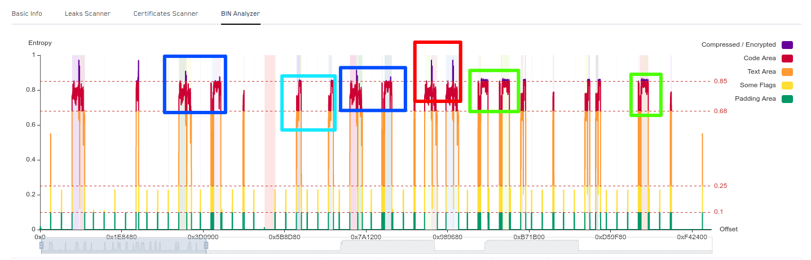
连续文件 & 部份压缩文件
部份压缩系统最坑人，平时从固件中提取的二进制文件，一般就直接去逆向分析代码了，这个可以看到一些字符串和符号，但是放到IDA里无法正常识别，于是查看熵图可以发现，部份区域是代码，部份是压缩文件，还有一些SHA512常数。
但是正常压缩文件的熵都是比较平滑并且趋近1的。并且一个系统固件，多段相隔较远的地址，出现大部份字符串变量是反常的。根据它的上一级loader推断出，这是一个连续文件，并且部份压缩。
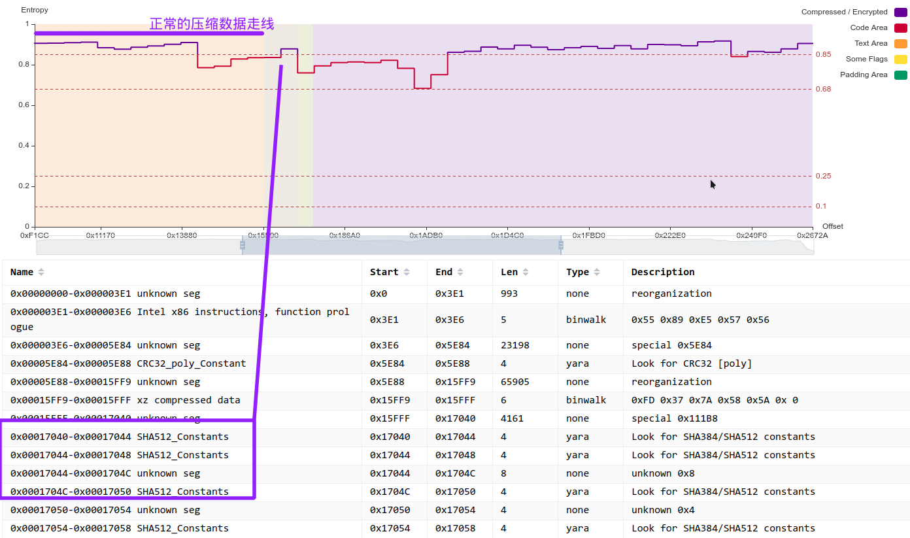
当部份加密和压缩结合
当部份加密和部份压缩结合，就会把人搞晕。
IoT设备性能较弱，为了平衡安全和使用体验，会使用部份加密。这是某设备的squashfs文件，直接解包会报错，如果经验不足可能会觉得是文件损坏。稍为有经验一点的会找到解谜代码，并且对文件解密，这种情况还是会解包失败。squashfs是会压缩的，所以较难看出是不是部份加密。
实际上部份加密和完全加密是有一定区别的。
压缩文件的熵，是会存在一定幅度的波动，这一区域就是部份加密的漏网之鱼。
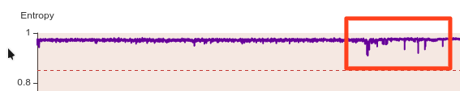
而完全加密随机性更高，就是平滑的一条线。
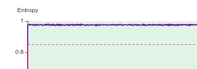
识别函数
有时基址不正确，IDA可能也不能准确识别出code区域，函数入口，就更别说去分析基址了。这种情况下可以先尝试还原一部分函数。
1
2
3
4
5
6
7
8
9
10
11
12
13
14
15def remake_func(opcodes, lastbytes, end_ea = ida_ida.inf_get_max_ea()):
ea = 0x0
lastbytes_len = len(lastbytes)
while (ea >= 0):
ea = ida_bytes.bin_search(ea + 1, end_ea, opcodes, None, 1, ida_bytes.BIN_SEARCH_FORWARD | ida_bytes.BIN_SEARCH_NOBREAK | ida_bytes.BIN_SEARCH_NOSHOW)
if ea == BADADDR : break
else:
print("get_bytes: ", hex(ea-lastbytes_len), ida_bytes.get_bytes((ea-lastbytes_len), lastbytes_len))
if ida_bytes.get_bytes((ea-lastbytes_len), lastbytes_len) == lastbytes:
add_func(ea, BADADDR)
print("0x{:x}: {}".format(ea, GetDisasm(ea)))
remake_func(b'\x55\x89\xe5', b'\xc3', 0xFF000000)
remake_func(b'\x55\x31\xC0', b'\xc3', 0xFF000000)
remake_func(b'\x55\x89\xe5', b'\xc2\x04\x00', 0xFF000000)
恢复常用函数
对于私有的MCU固件不使用外部链接库，因此大部分基础功能都在代码里实现，需要先找出使用频繁的函数：
memcpy memset memcmp mmap printf strcpy kfree
对于基于开源项目开发的固件，可以参考源码特征识别出基本的函数
根据这些函数可以进一步推导出逻辑。
查找引用最多的函数脚本
1
2
3
4
5
6
7from idaapi import *
funcs = Functions()
for f in funcs:
name = Name(f)
func_xref_amount = len(list(XrefsTo(f)))
if func_xref_amount > 30:
print "%s %d" % (name, func_xref_amount)
对于开源的MCU固件，一般自己先编译一个固件，要保证工具链、版本号一致。链接时生成符号信息，在使用FILRT生成符号和指纹，在固件里匹配，就能还原出大部分函数。
寻找带字符串的函数
对于基址没有和0x1000对齐的固件，难以肉眼猜出基址。但是我还有办法，首先察看字符串全局变量，看左侧的地址，记住这些地址序列
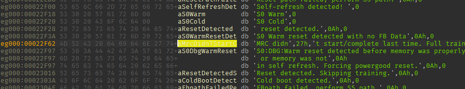
在x86平台，静态变量入参会用push，push搜索起来也要比mov这种更佳方便。 在IDA全局搜索 push 0x，然后再筛选0x62，0x97结尾的内容。如下图所示，这些连续规律和上图地址序列一致，一眼丁真。
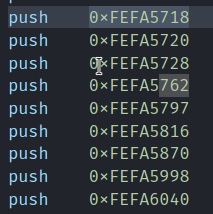
基址计算： 0xFEFA5762 - 0x22F62 = 0xFEF82800
修复函数交叉引用
有的函数找不到调用源，可能是放在一个jumptable内，可以全局搜索立即数，搜索的值为该函数的地址。 有的时候地址是相对偏移地址，要减去基址。
有的时候一个32位地址是由高16位和低16位组成，特征如下
1
2MOV Rx, #HighAddr
MOVT Rx, #LowAddr
冷门架构
IDA Pro作为反汇编工具，能够正确把机器码反编译成汇编语言，并且能够生成函数调用图，已经很好了。对于V850这种架构，需要先手动识别出每个函数入口，另外大部分交叉引用还不能正确识别，也需要手工生成。
另外是芯片特定的寄存器偏移、外围地址分布。包括RAM、外围设备总线，外围接口寄存器，中断寄存器等。一般在芯片数据手册里面找，如果手册未公开，就到BSP、Scatter里找。再在IDA Pro的CFG里新增特定平台的配置，包括地址分布，寄存器描述。
对比源码逆向
如果看不懂代码到底什么意思，就找一个相似功能的工程，编译成同一平台的固件，放入IDA Pro逆向分析，对比源码，大概能知道是什么意思。
模拟执行
如果遇到很复杂的代码，却只要得到结果，就能使用Unicorn Engine模拟执行，但是只支持ARM、MIPS、PPC等常见架构。
逆向特定功能
加解密库会有很多常量数据，通过搜索这些数据，可以确定使用了哪些加解密算法，可以反推到关键代码。加密、哈希、冗余校验函数，一般这类函数都会有专门的常数数组，特征很明显，通常在启动、升级、通信阶段用到。
使用FindCrypt插件，可以快速发现这些函数。
比如SD、SATA协议的CMD，全局搜索立即数
CAN总线，搜索CAN寄存器地址
IDA pro problems 技巧
在 IDA pro 点击 view > Open subviews > Problems，找到下列类型的问题
- NONAME
- BOUNDS
这些问题一般都会携带一个立即数，代表对应的地址不在预设的段地址范围内。这类立即数一般可能是寄存器地址，也可能是使用了正确基址的地址。
还有一种可能能是外部二进制文件的地址（一般Bootloader比较多，比如固件A的基址无法确定，但是函数入口还原了，固件B有一些错误地址，如果调用的高位地址和固件A匹配，那么基本可以确定固件A的基址）。
Case
某x86固件，基址不确定。首先搜索Problem，筛选BOUNDS，可以看到一堆Call，意思是函数调用，但是这里使用的是near ptr，也就是相对地址，因此这里的7A10Ah，是当前基址加上偏移的地址。
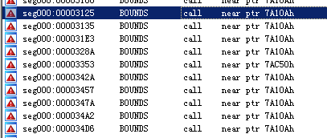
但是，这个文件大小也没有超过0x40000，所以7A10A是个无效地址。随便点一个地址进去，可以发现，0xFEF84DE0是0x7A10A函数的参数，所以这个0xFEF84DE0不可能是寄存器，极大可能是全局变量。
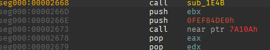
根据 寻找带字符串的函数这里的技巧，可以确定基址是0xFEF82800，当修改好基址，IDA会自动识别出更多有效函数。而且前面提到的0x7A10A会变成0xFEFFC90A，可这还是一个无效地址。因为这个地址是指向外部的二进制地址，另一个二进制文件的printf函数地址就是0xFEFFC90A，因此要添加外部二进制文件。
这里一定要注意，接下来的操作过程，非常容易出错。因为操作提示不太人性化，几天不用就会忘记，填错了容易毁了当前的工程文件。Shift+F7进入Segment页面，创建一个新的段，
段名随便填，开始地址是外部二进制文件基址
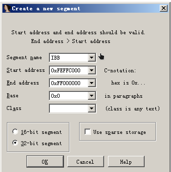
添加完检查下是否和其他段冲突
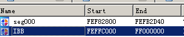
添加外部二进制文件，File -> Load file -> Additional binary file...
这里的offset填写为IBB段的基址。
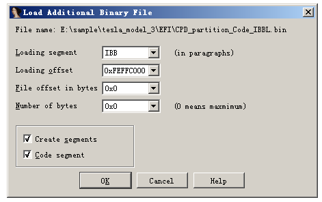